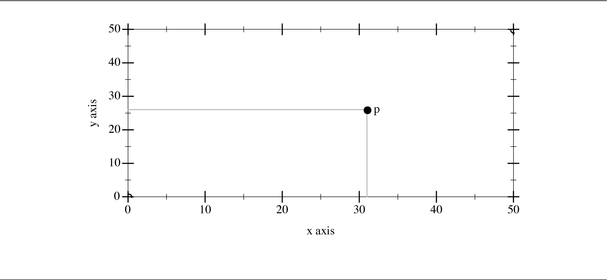

5.2 Computing with posns
While functions and the laws of functions are completely familiar from pre-algebra, posn structures appear to be a new idea. Then again, the concept of a posn ought to look like the Cartesian points or positions in the plane you may have encountered before.
Selecting a Cartesian point’s pieces is also a familiar process. For example, when a teacher says, “take a look at the graph of figure 29 and tell me what px and py are,” you are likely to answer 31 and 26, respectively, because you know that you need to read off the values where the vertical and horizontal lines that radiate out from p hit the axes.

Figure 29: A Cartesian point
We thank Neil Toronto for the plot library.
We can express this idea in BSL. Assume you add
(define p (make-posn 31 26))
to the definitions area, click RUN, and perform these interactions:
> (posn-x p)
31
> (posn-y p)
26
Defining p is like marking the point in a Cartesian plane; using posn-x and posn-y is like subscripting p with indexes: px and py.
Computationally speaking, posn structures come with two equations:
(posn-x (make-posn x0 y0)) == x0
(posn-y (make-posn x0 y0)) == y0
DrRacket uses these equations during computations. Here is an example of a computation involving posn structures:
(posn-x p)
== ; DrRacket replaces p with (make-posn 31 26)
(posn-x (make-posn 31 26))
== ; DrRacket uses the law for posn-x
31
Stop! Confirm the second interaction above with your own computation. Also use DrRacket’s stepper to double-check.